pacman::p_load(corrplot, ggstatsplot, tidyverse)Part 2 Visual Correlation Analysis
1 Overview
The correlation coefficient is a widely used statistic for measuring both the direction and strength of the relationship between two variables. Its value ranges from −1.0 to 1.0: a coefficient of 1 indicates a perfect positive linear relationship, −1.0 a perfect negative one, and 0.0 signifies no linear relationship.
When working with multivariate data, pairwise correlation coefficients are often presented in a correlation matrix or scatterplot matrix.
There are three main reasons for computing a correlation matrix:
To reveal pairwise relationships among high‑dimensional variables.
To serve as input for other analyses such as exploratory or confirmatory factor analysis, structural equation modeling, or linear regression (especially when handling missing data pairwise).
To act as a diagnostic tool. For instance, in linear regression, strong correlations among predictors may indicate unreliable estimates.
For large datasets with many observations and variables, a corrgram is often used to visually explore and analyze the structure and patterns of relationships. It is based on two key principles:
- Representing correlation values to show both sign and magnitude.
- Reordering variables so that similar ones appear adjacent, improving interpretability.
In this hands‑on exercise, we will learn how to visualize correlation matrices. The tutorial includes three sections: creating a correlation matrix with pairs() from base R, plotting a corrgram using the corrplot package, and building an interactive correlation matrix with plotly.
2 Check, install and launch packages
3 Data Preparation
3.1 Importing Data
wine <- read_csv("../data/wine_quality.csv", show_col_types = FALSE)All variables are numerical and continuous data type except quality and type.
4 Building Correlation Matric using pairs() method
pairs(wine[,1:11])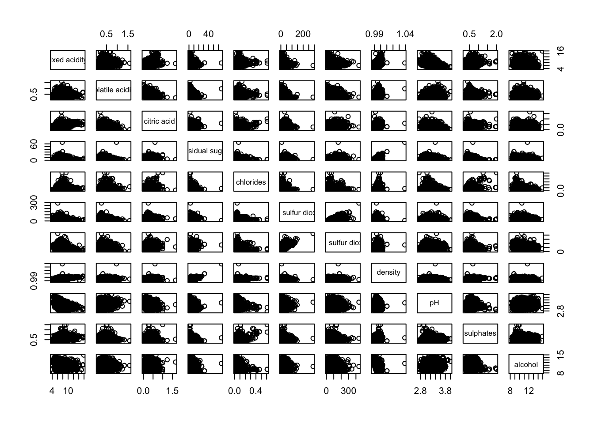
The pairs() function in R requires either a matrix or a data frame as input. Creating a scatterplot matrix with it is straightforward, since the function works with default settings. In this example, columns 2 through 12 of the wine data frame are used to generate the matrix. These columns represent the variables: fixed acidity, volatile acidity, citric acid, residual sugar, chlorides, free sulfur dioxide, total sulfur dioxide, density, pH, sulphates, and alcohol.
pairs(wine[,2:12])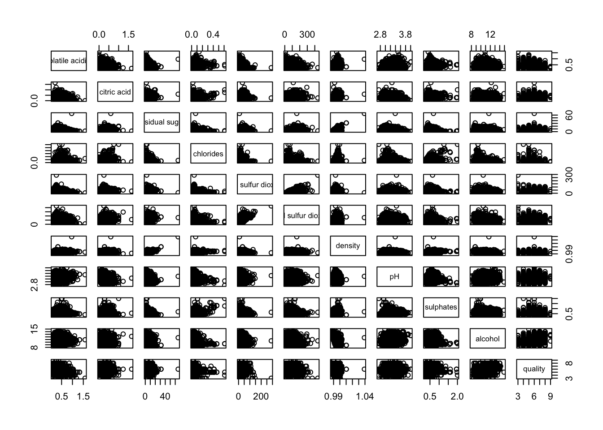
4.0.1 Drawing the lower corner
The pairs() function in R Graphics offers several customization options. Because a correlation matrix is symmetric, it is common practice to display only one half,either the upper or the lower triangle rather than both. To show just the lower half, we can use the upper.panel argument, as shown in the code example below.
pairs(wine[,2:12], upper.panel = NULL)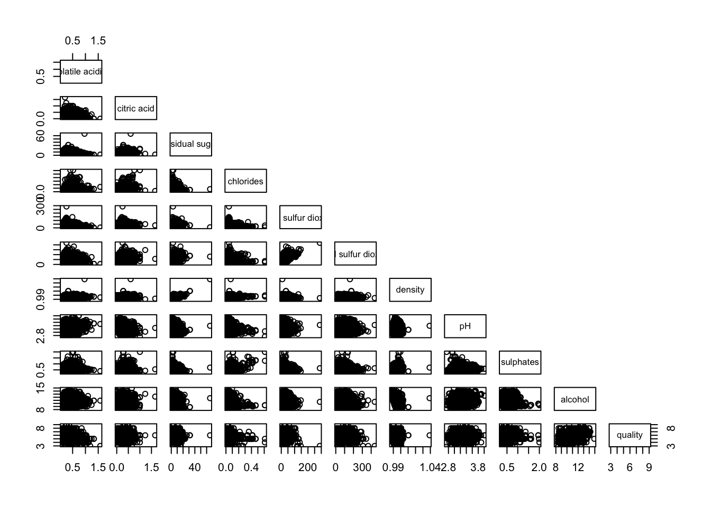
Similarly, we can display the upper half of the plot by using the code example below
pairs(wine[,2:12], lower.panel = NULL)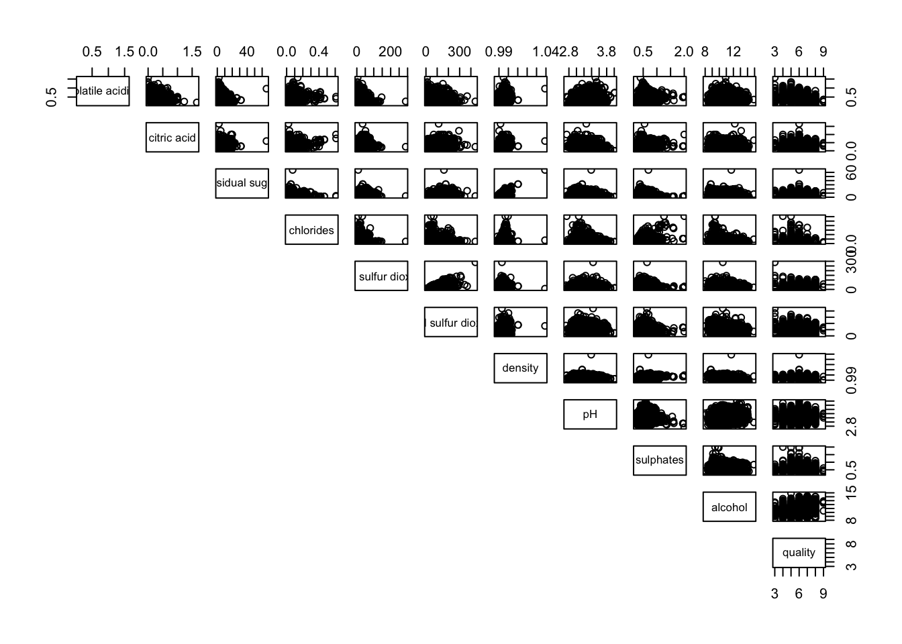
4.0.2 Including with correaltion coefficients
Instead of showing scatterplots for each variable pair, we can display their correlation coefficients using the panel.cor function. This approach replaces the plot panels with numeric correlation values, and the font size scales with the strength of the correlation, so stronger relationships appear in larger text.
panel.cor <- function(x, y, digits=2, prefix="", cex.cor, ...) {
usr <- par("usr")
on.exit(par(usr))
par(usr = c(0, 1, 0, 1))
r <- abs(cor(x, y, use="complete.obs"))
txt <- format(c(r, 0.123456789), digits=digits)[1]
txt <- paste(prefix, txt, sep="")
if(missing(cex.cor)) cex.cor <- 0.8/strwidth(txt)
text(0.5, 0.5, txt, cex = cex.cor * (1 + r) / 2)
}
pairs(wine[,2:12],
upper.panel = panel.cor)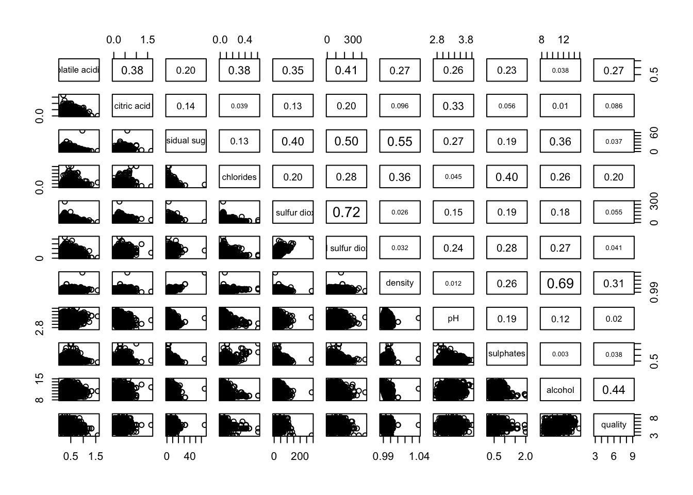
5 Visualizing Correlation Matrix using ggcormat() method
One limitation of correlation matrices is that scatterplots become cluttered when the dataset is large (typically more than 500 observations). To address this, the corrgram visualization technique, introduced by D.J. Murdoch and E.D. Chow (1996) and later refined by M. Friendly (2002), is often used.
Several R packages provide functions for plotting corrgrams, such as corrgram, ellipse, and corrplot. In addition, packages such as ggstatsplot also offer corrgram functionality.
In this section, we will learn how to visualize correlation matrices using the ggcorrmat() function from the ggstatsplot package. This approach combines statistical detail with clear graphical representation, making it easier to explore relationships in high‑dimensional data.
5.1 The basic plot
One key advantage of using ggcorrmat() compared to many other correlation‑matrix visualization methods is its ability to generate a comprehensive yet professional statistical report. This function not only displays the correlation values clearly but also integrates detailed statistical information directly into the visualization, producing results that are both informative and publication‑ready.
ggstatsplot::ggcorrmat(
data = wine,
cor.vars = 1:11)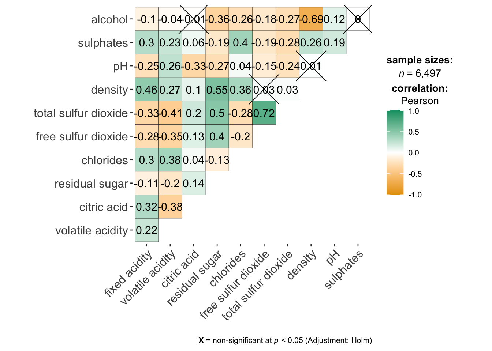
Now we will modify the plot by adding accessories
ggstatsplot::ggcorrmat(
data = wine,
cor.vars = 1:11,
ggcorrplot.args = list(outline.color = "black",
hc.order = TRUE,
tl.cex = 10),
title = "Correlogram for wine dataset",
subtitle = "Four pairs are no significant at p < 0.05"
)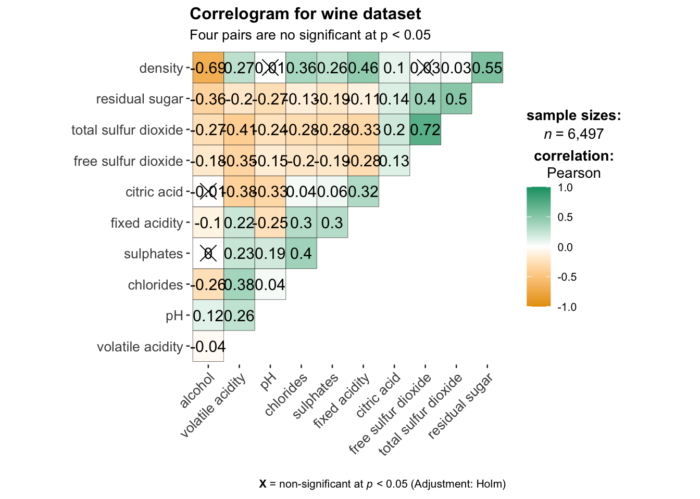
From the code chunk above, two important arguments are worth noting:
cor.varsspecifies the variables to be included when computing the correlation matrix that underlies the corrgram.ggcorrplot.argsallows us to pass additional options directly to the ggcorrplot::ggcorrplot() function. However, certain arguments should not be included here because they are already handled internally. These include: corr, method, p.mat, sig.level, ggtheme, colors, lab, pch, legend.title, and digits.
This setup ensures that your corrgram is both statistically accurate and visually polished.
A sample sub‑code chunk below can be used to fine‑tune specific elements of the plot. For instance, you can adjust the font size of the x‑axis, y‑axis, and the statistical report to improve readability and presentation quality.
ggplot.component = list(
theme(text=element_text(size=5),
axis.text.x = element_text(size = 8),
axis.text.y = element_text(size = 8)))5.2 Building multiple plots
ggstatsplot also supports faceting available in the grouped_ggcorrmat() of ggstatsplot
grouped_ggcorrmat(
data = wine,
cor.vars = 1:11,
grouping.var = type,
type = "robust",
p.adjust.method = "holm",
plotgrid.args = list(ncol = 2),
ggcorrplot.args = list(outline.color = "black",
hc.order = TRUE,
tl.cex = 10),
annotation.args = list(
tag_levels = "a",
title = "Correlogram for wine dataset",
subtitle = "The measures are: alcohol, sulphates, fixed acidity, citric acid, chlorides, residual sugar, density, free sulfur dioxide and volatile acidity",
caption = "Dataset: UCI Machine Learning Repository"
)
)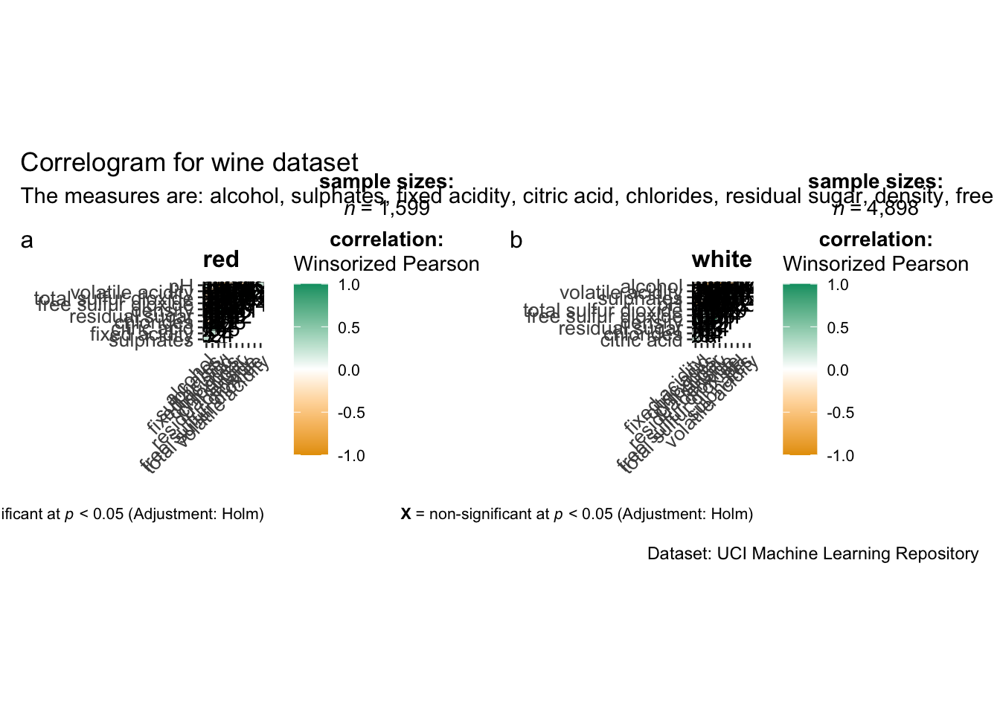
From the code chunk above, a few important points stand out:
grouping.varis the only argument required to build a facet plot, as it specifies the variable used to divide the data into groups.Behind the scenes,
group_ggcorrmat()relies on the patchwork package to assemble multiple plots into a single layout.The
plotgrid.argsargument passes additional options to patchwork::wrap_plots, with the exception of the guides argument, which is handled separately earlier in the workflow.Similarly,
annotation.argsprovides access to the annotation features of the patchwork package, allowing you to add titles, labels, or other descriptive elements to the combined plot.
6 Visualizing Correlation Matrix using corrplot Package
6.1 Getting started
Before plotting a corrgram with corrplot(), we first need to compute the correlation matrix of the wine data frame. This can be done using the code below
wine.cor <- cor(wine[, 1:11])Once the correlation matrix is created, we can visualize it with corrplot() using the default settings:
corrplot(wine.cor)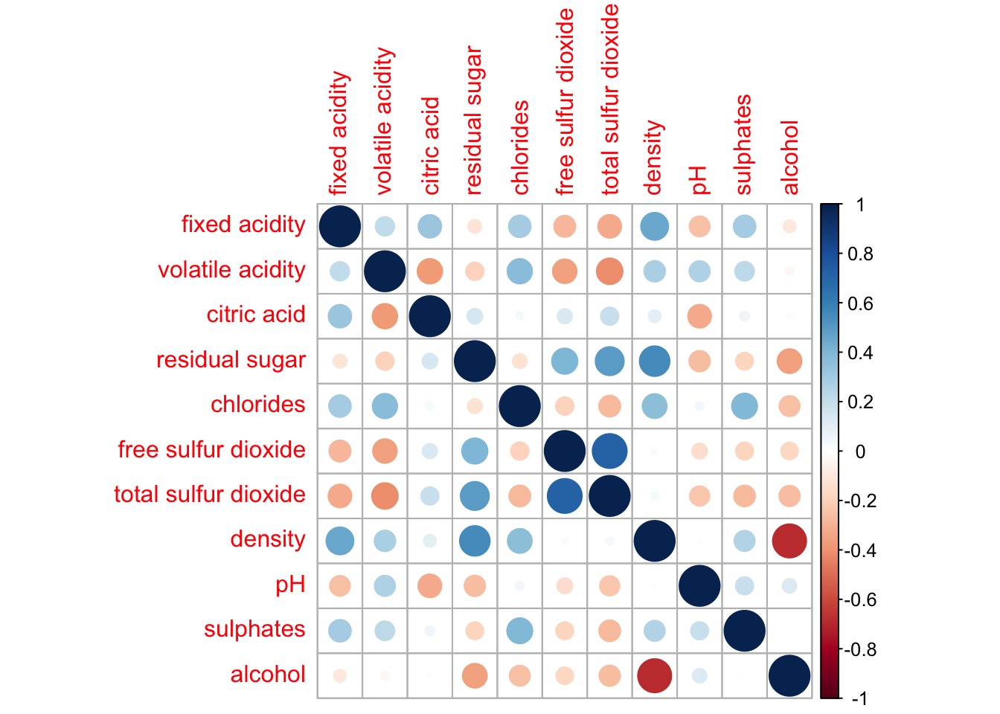
By default, corrplot() visualizes the corrgram using circles arranged in a symmetric matrix layout. The default color scheme is a diverging blue–red palette:
Blue circles represent variable pairs with positive correlation coefficients.
Red circles represent variable pairs with negative correlation coefficients.
The intensity (saturation) of the color indicates the strength of the correlation. Darker shades correspond to stronger linear relationships, while lighter shades reflect weaker ones.
This design makes it easy to quickly assess both the direction and magnitude of correlations across all variable pairs.
7 Visual Geometrics
corrplot(wine.cor,
method = "ellipse") 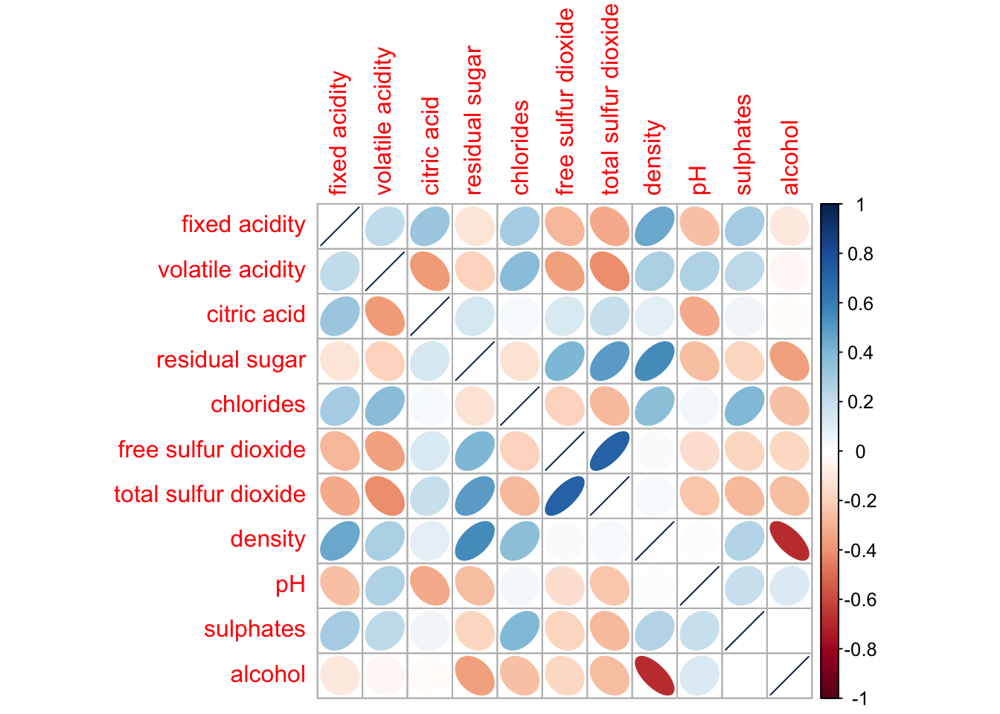
In the corrplot package, there are seven different geometric styles (specified by the method argument) that can be used to encode correlation values: circle, square, ellipse, number, shade, color, and pie. By default, the visualization uses circles. As shown earlier, the default corrplot matrix is rendered with circles, but this can easily be changed by setting the method argument in the function call.
7.1 Layout
In the corrplot package, three layout types are available: “full”, “upper”, and “lower”. By default, the layout is set to “full”, which displays the entire correlation matrix. You can change this behavior using the type argument in corrplot().
corrplot(wine.cor,
method = "ellipse",
type="lower")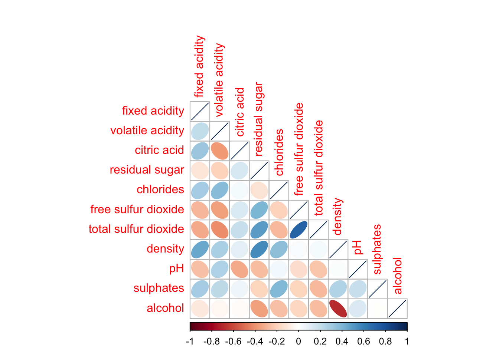
A R code example for the different layout types shown below
# Full matrix (default)
corrplot(wine.cor, type = "full")
# Only upper triangle
corrplot(wine.cor, type = "upper")
# Only lower triangle
corrplot(wine.cor, type = "lower")The default layout of a corrgram can be customized further. For example, you can use the diag argument to remove the diagonal cells, and the tl.col argument to change the axis text label color (e.g., to black). These options allow you to refine the appearance of the plot for clarity and presentation quality, as shown in the code and figure below.
corrplot(wine.cor,
method = "ellipse",
type="lower",
diag = FALSE,
tl.col = "pink")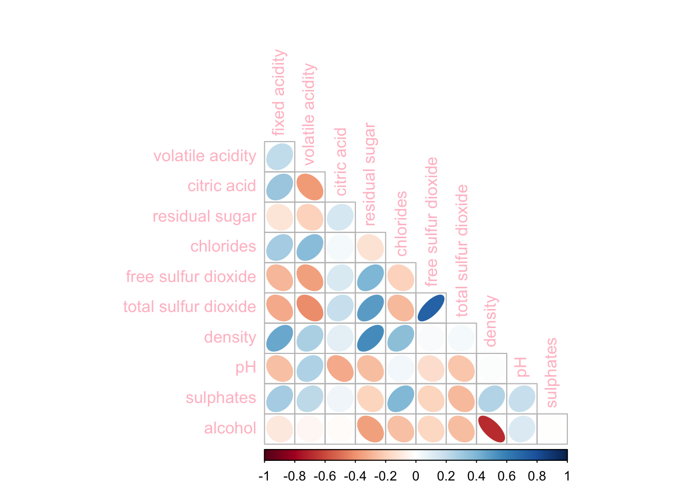
7.2 Mixed Layout
With the corrplot package, we can design a corrgram that combines different visualization styles, showing one half of the matrix with graphical encodings and the other half with numerical values. To achieve this mixed layout, we use the corrplot.mixed() function, which is a convenient wrapper designed specifically for mixed visualization styles. This approach allows you to present correlations both visually and numerically in a single plot, making the matrix easier to interpret while retaining statistical detail.
corrplot.mixed(wine.cor,
lower = "ellipse",
upper = "number",
tl.pos = "lt",
diag = "l",
tl.col = "darkblue")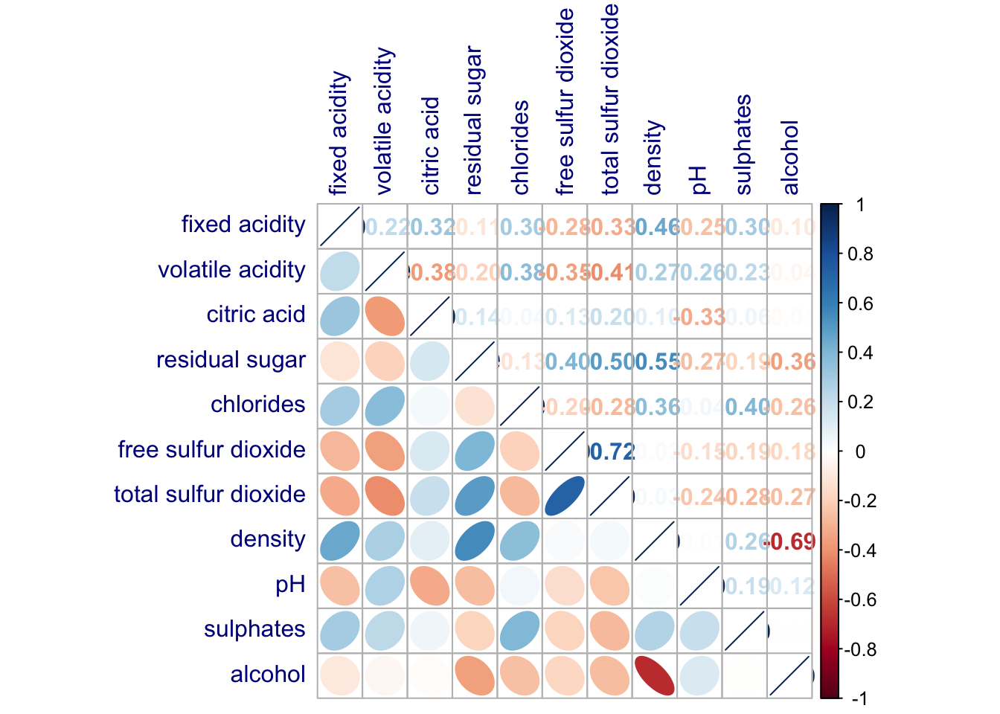
7.3 Significant Test
We will use the cor.mtest() to compute the p-values and confidence interval for each pair of variables
wine.sig = cor.mtest(wine.cor, conf.level= .95)We then use p.mat argument to plot
corrplot(wine.cor,
method = "number",
type = "lower",
diag = FALSE,
tl.col = "black",
tl.srt = 45,
p.mat = wine.sig$p,
sig.level = .05)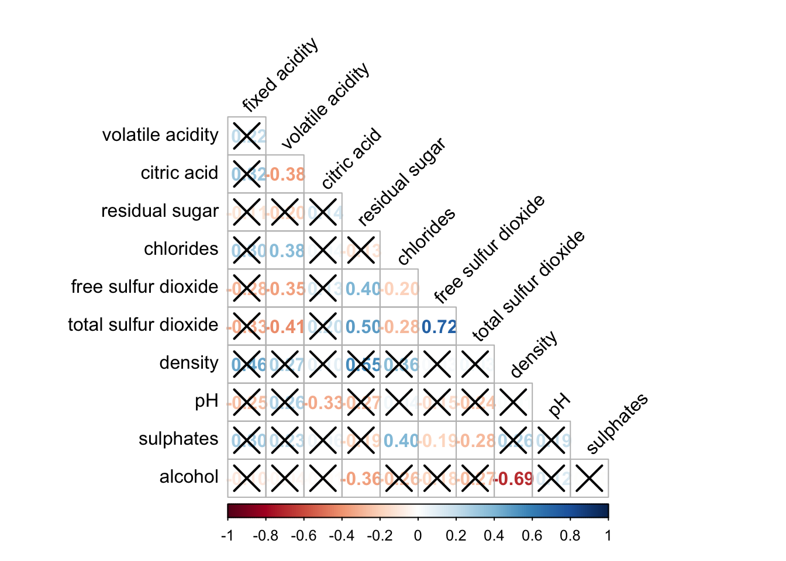
The figure illustrates a corrgram combined with significance testing. This visualization highlights that not all correlation pairs are statistically significant. For example, the correlation between total sulfur dioxide and free sulfur dioxide is statistically significant at the 0.1 level, whereas the correlation between total sulfur dioxide and citric acid does not reach statistical significance.
This approach makes it easier to distinguish meaningful relationships from those that may simply reflect random variation.
7.4 Reorder a corrgram
Matrix reordering plays a crucial role in uncovering hidden structures and patterns within a corrgram. By default, the attributes are displayed in their original order, based directly on the correlation matrix. However, this can be changed using the order argument in corrplot().
The corrplot package currently supports four main sorting methods:
AOE: Angular order of the eigenvectors (see Friendly, 2002 for details).
FPC: First principal component order.
hclust: Hierarchical clustering order, with the agglomeration method specified by hclust.method (options include “ward”, “single”, “complete”, “average”, “mcquitty”, “median”, or “centroid”).
alphabet: Alphabetical ordering of variables.
Beyond these, additional algorithms are available in the seriation package, offering even more flexibility for arranging correlation matrices.
corrplot.mixed(wine.cor,
lower = "ellipse",
upper = "number",
tl.pos = "lt",
diag = "l",
order="AOE",
tl.col = "black")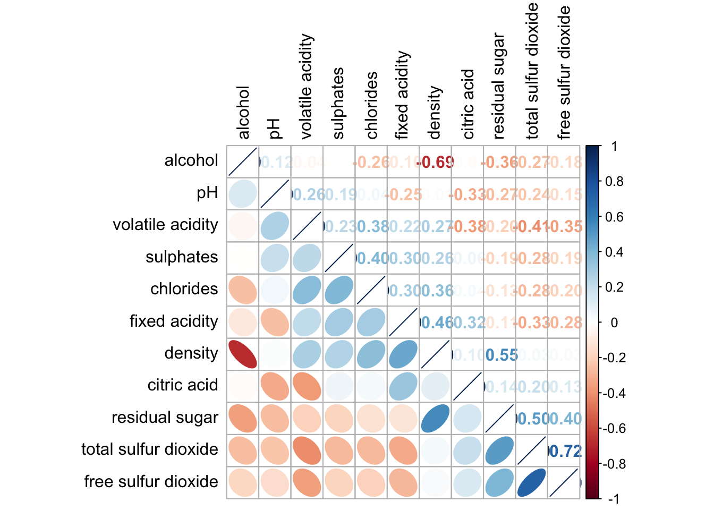
7.5 Reorder a corrgram using hclust
corrplot(wine.cor,
method = "ellipse",
tl.pos = "lt",
tl.col = "black",
order="hclust",
hclust.method = "ward.D",
addrect = 3)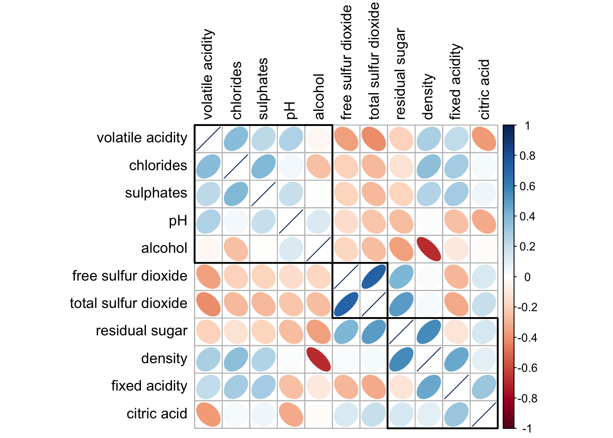
This code plots a correlation matrix using ellipses, places labels at the top‑left in black, reorders variables by hierarchical clustering with Ward’s method, and highlights three clusters with rectangles.